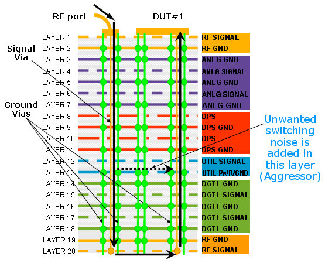
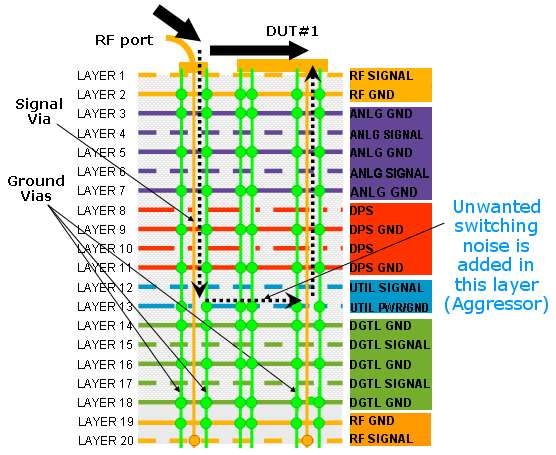

RF signal noise degradation
When signal integrity rules are not enforced on RF boards, unwanted noise can get added from aggressor signals into the sensitive RF or analog path. This increases the noise level alongside the signal propagation path. Eventually, this will influence the performance of the tested device. If the signal-to-noise degradation is severe, some receiver tests will fail.
The example graphic shows a typical failure mechanism:

In this example, the RF signal has a loop-back path: from the device side (top layer) it is routed through the board to the tester side (bottom layer), then through some loopback components (switch) the RF path is routed back to the DUT. If there is no adequate grounding and shielding along the full signal path, multiple propagation paths exist. In this scenario the majority of the signal power travels in the expected path - but a small portion of the signal may get back to the main signal using a different path. If there is noisy signal (aggressor) in the secondary path, the low level detour signal will carry back the unwanted noise-added combined signal. This will cause signal-to-noise degradation.
However, the RF path does not even need to actually cross through the DUT board to catch some unwanted noise degradation. Uncontrolled and unwanted multiple signal paths can cause added noise as leakage through regular vias, or even in not fully contained paths within the same layer:

Rules
To avoid signal-to-noise ratio degradation, follow these rules:
- Separate different signal types by using dedicated ground layers.
- Always have a return path adjacent to any RF signal path.
- Contain the signal, avoid leakage and cross-talk.
- Apply RF shielding.
- Use four ground pins at higher RF frequencies ( > 1GHz).
- Avoid multiple path propagation.
Functional changes
- Introduced in SmarTest 7.2.0